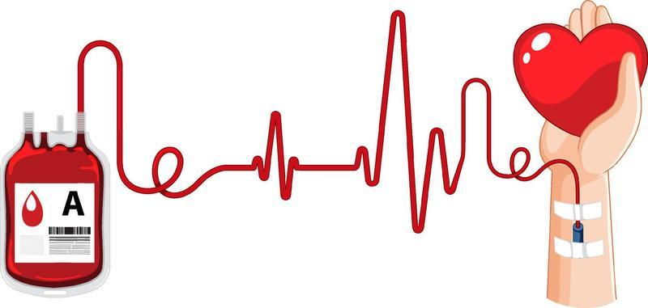

Save Lives - Donate Blood
Your donation can make a difference in someone's life. Join our medical blood management system and help save lives today.


Your donation can make a difference in someone's life. Join our medical blood management system and help save lives today.
Join our medical blood management system and make a difference
Blood donation is a simple and effective way to help others in need. Every year, millions rely on blood donations to survive surgeries, accidents, and medical conditions.
Your donation could help save up to three lives at once, making an impact in your community and beyond.
Schedule an appointment at your nearest blood donation center and help make a difference today.
Find your nearest blood donation center
Imus, Cavite
Contact: (046) 471-0137
Batangas City
Contact: (043) 723-0911
Lucena City, Quezon
Contact: (042) 373-0439
Comprehensive blood management services
To meet the increasing demand for blood and augment the national blood requirement, the PRC conducts education and recruitment sessions to encourage regular voluntary blood donations from communities, different companies, organizations, colleges, and universities nationwide.
With different PRC blood service facilities strategically located in the entire country, the PRC collects blood from voluntary, non-remunerated blood donors with their donations accounting for almost 50% share of the nation's blood supply.
Whole blood donations are separated into components using special equipment to generate one unit each of red blood cells, plasma, and platelets. Thus, one donation can help save three lives.
Once blood is suitable for transfusion, it is stored in a temperature-controlled blood bank refrigerator. Clients or patients needing blood for transfusion may request from any PRC blood facilities upon presentation of a blood request form issued by the hospital or physician.
Real stories from our blood donors
"Donating blood was a rewarding experience! Knowing I helped save lives makes me feel incredible."
"The process was smooth, and the staff was very friendly. I will definitely donate again."
"I was nervous at first, but it turned out to be an amazing experience. Everyone should try it!"